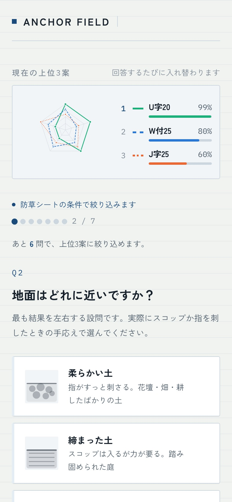
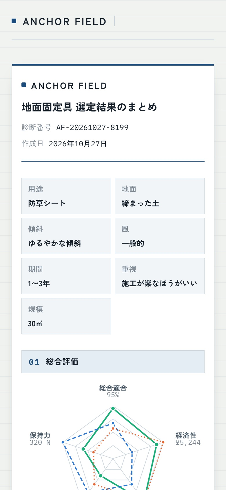
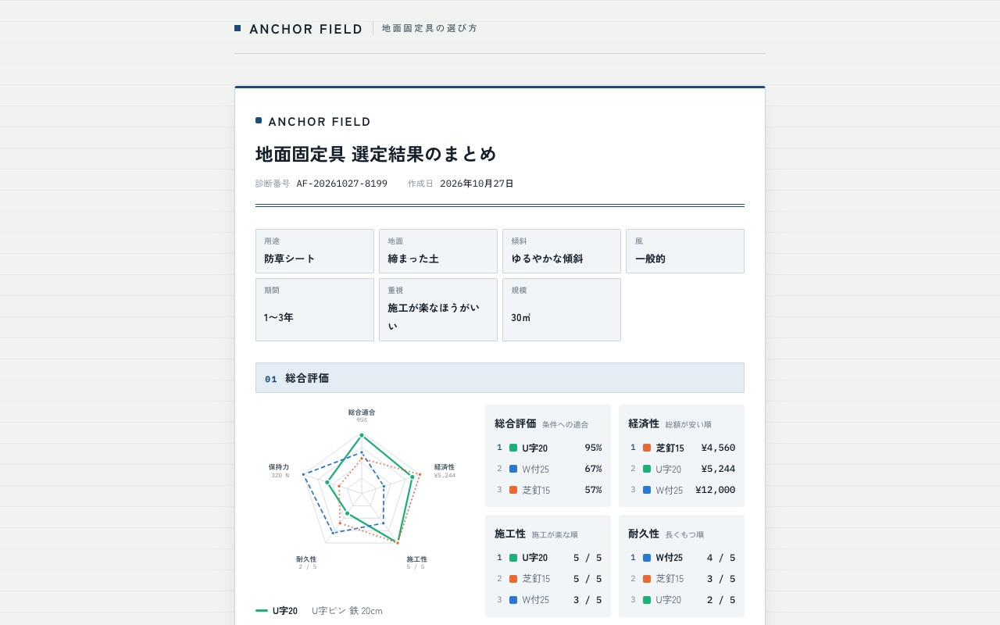

MORIKOSHA / DESIGN & DIGITAL CRAFT
Product comparison site – ¥98,000 (tax incl.) | Morikosha

The know-how experts use to choose,
turned into a page that picks for you just by answering questions.
A page for products with many part numbers and no obvious way to choose, such as materials and tools.
It asks a few questions about where and why the product will be used, then suggests suitable products and rough quantities. We turn the selection knowledge that manufacturers and dealers hold into something customers can use on their own.
Expected effects:
- Fewer inquiries asking "which one should I choose?" (for example, the page can answer the call asking "which stake suits this ground?")
- Fewer returns caused by wrong choices
These are all expectations; we make no promises about figures.
- I, who spent eight years on the ordering side, build the scoring from your materials, and we confirm it with you before settling it.
- Product materials you entrust to us are used for nothing but this work.
| ProductionIncludes: research on your industry and products / design of questions and scoring / entering product data / building the page and embedding it in your site / early fixes after launch. One-time purchase, with no monthly fees. | ¥98,000 (tax incl.) |
|---|---|
| Lead time | About two weeks |
| Publishing setup service (optional)We embed it in your site and take it all the way to publication | +¥48,000 (tax incl.) |
| Content revisionsAfter the two weeks following delivery, per revision (one free revision within the two weeks) | +¥18,000 (tax incl.) |
Sample: a page for choosing ground fixings
Pins and stakes for fixing weed-control sheets and artificial turf come in many part numbers, and which suits depends on how hard or sloped the ground is. In this sample, answer seven questions: purpose, ground type, slope, wind, duration of use, priorities and area, and it shows three matching options and a rough count of how many you need.



Click a screen image to view it larger in a new tab.
How it is made
- We ask about your products and how people chooseWe learn which products you handle and how you currently explain the differences to customers, then research your industry and products.
- We set the questions and scoresWe design the questions your customers will answer and the points each answer gives to each product.
- We build the pageWe register your product data and build a page that shows the best-matching products as visitors answer the questions.
- We embed it in your siteYou paste a tag we prepare into a page on your site. If you are unsure how, we will send you the steps. After that, we make the first round of revisions.
FAQ
Are there monthly fees?
No. It is a one-time purchase of ¥98,000 (tax incl.). It lives on your own site, so you pay us no monthly fees.
Can I add or change the questions?
Yes. We revise it once free of charge within two weeks of delivery. After that, each change is an additional ¥18,000 (tax incl.).
What if products are added or prices change?
We handle these as content revisions at ¥18,000 (tax incl.) each (one revision is free within two weeks of delivery).
How are the recommendations decided?
Each answer adds points to the products, and they are listed from the highest score down. We design the scoring ourselves, based on your expertise.
Where does it go?
It is embedded in your own site. Embedding is included in the work.